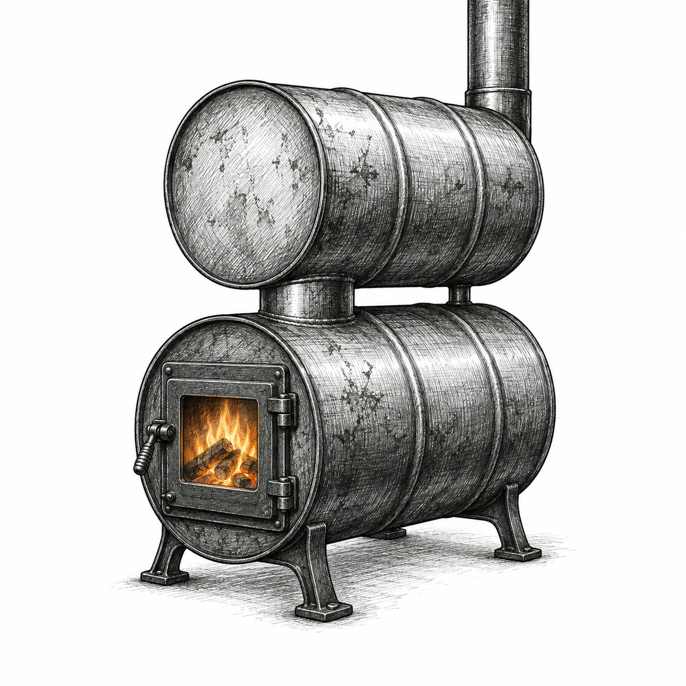
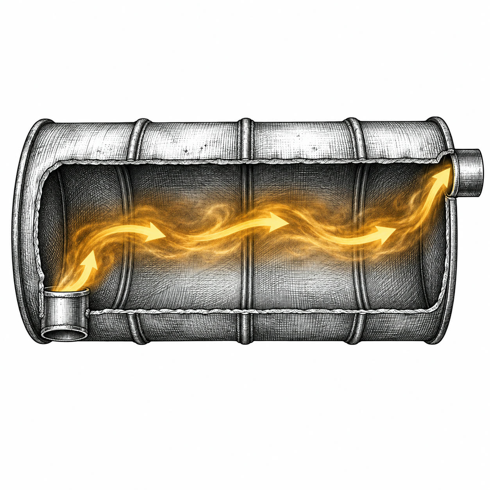
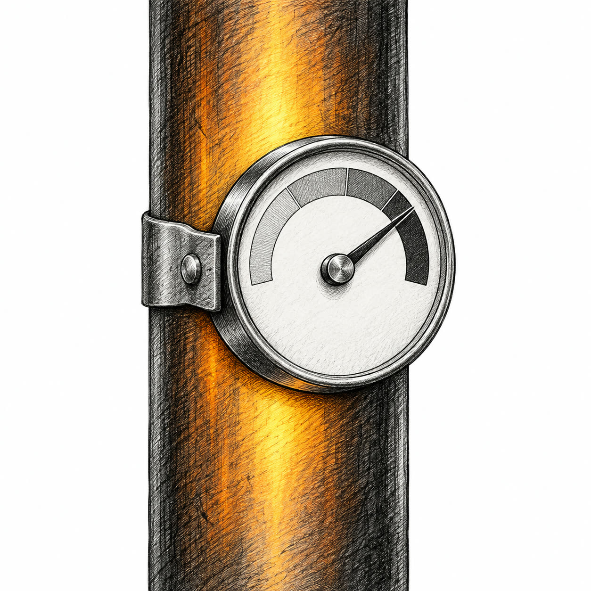

A barrel stove is a steel drum on legs with a cast iron door and a 6 inch flue collar. No baffle inside, no second burn for the smoke. Stoves built that way land around 40 percent efficient.
On a leaky old stove, plain hot gas can carry off about a third of everything you burn. That is the heat the second drum goes after.
You stack a second steel drum on top and route the smoke through it before it reaches the chimney. On paper, that gets you around a third more heat from the same wood.

Certified stoves are cleaner and far more efficient, and in a house they are the right answer. The drum is a shop and cabin heater, nothing more.

Say the gas leaves the fire barrel at 700 degrees Fahrenheit and the top drum pulls it down to 450. Room air is 70.
250 caught out of a 630 gap = about 40 percent recoveredIf hot gas was carrying off a third of your fuel, catching 40 percent of it is worth about 13 points of efficiency. The stove climbs from about 40 percent to the low to mid 50s. That is roughly a third more heat per log, or one cord in four you never burn.
This is a worked example, not a tested result. Only a controlled efficiency test would give your real number.
The kit is not a suggestion. Follow the maker's assembly, the sand bed, the damper move, and the collar positions exactly. Improvised placement changes how it drafts and how it burns.
Wood smoke carries tar and water vapor. Cool it too far and it condenses on the steel as creosote, a crust that burns. The National Fire Protection Association ties failure to clean, mostly creosote, to about 1 in 4 home heating fires.
That warning applies to this build too. A barrel stove starts with hotter exhaust, so there is room to take heat out, but only if you watch the temperature.
Put a thermometer on the pipe above the top drum and above the fire barrel, and watch both ends. Dry wood means under 20 percent moisture. Split a log and test the fresh face.
